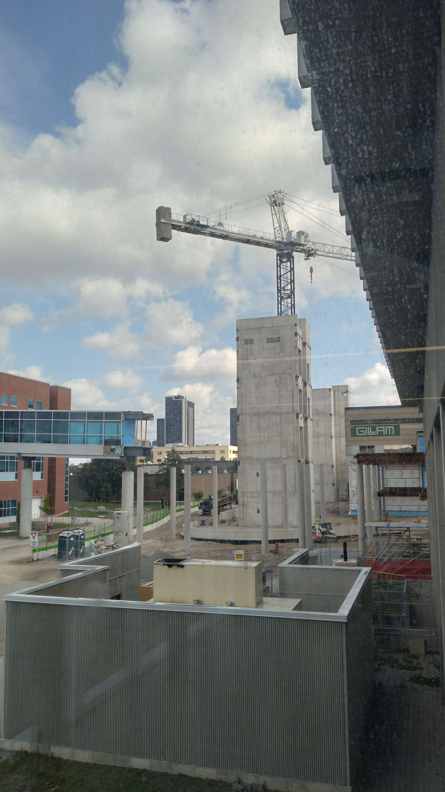
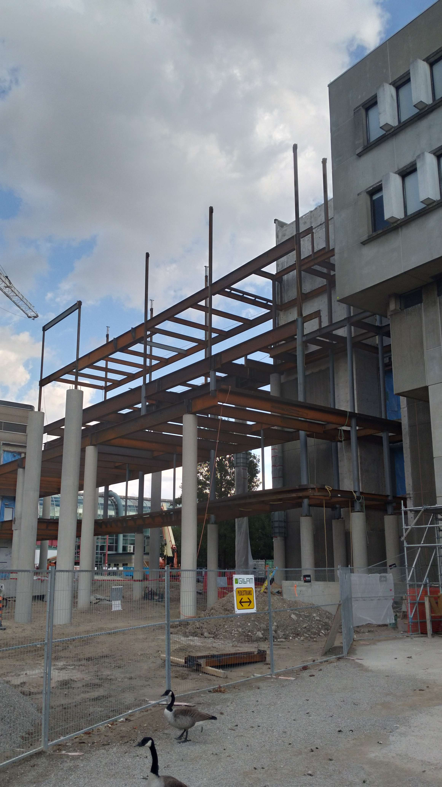
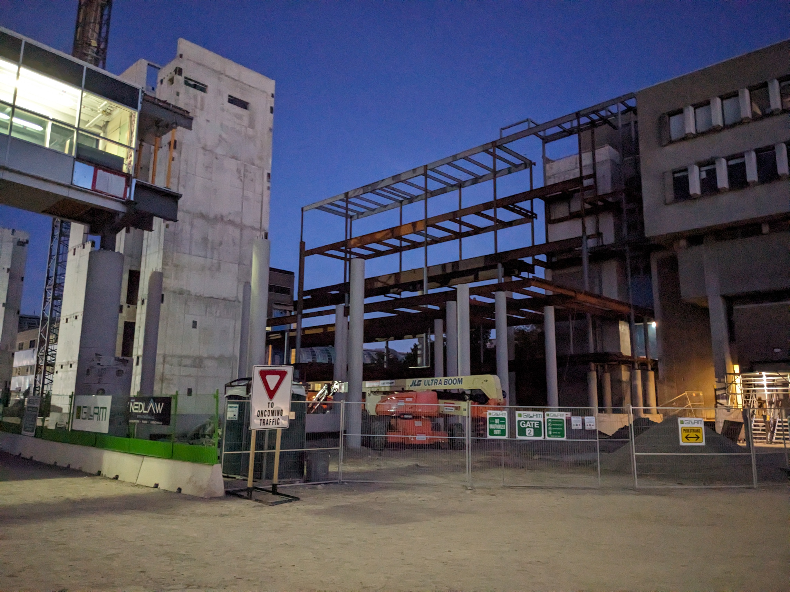
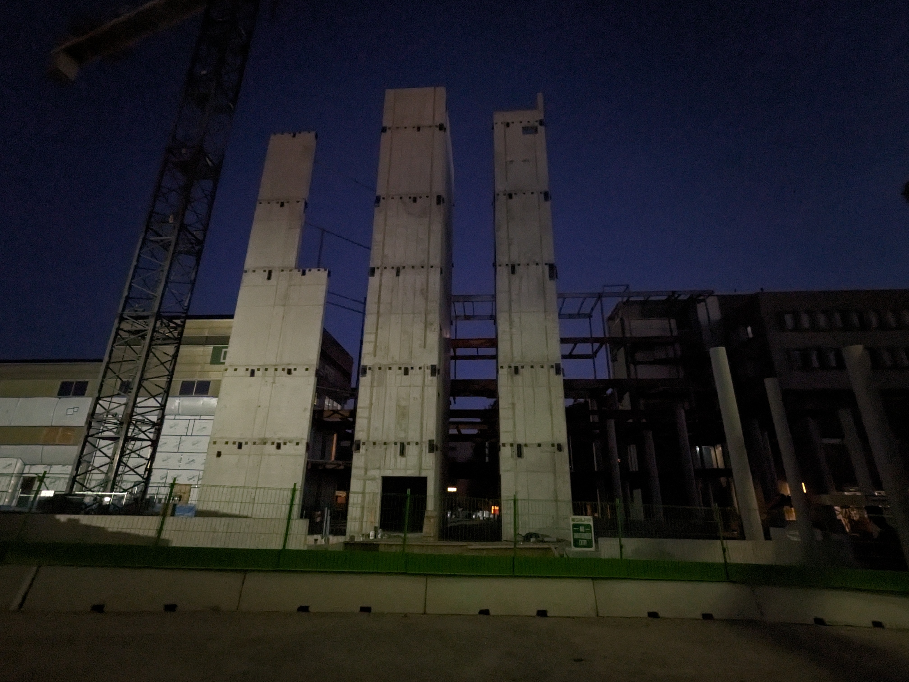
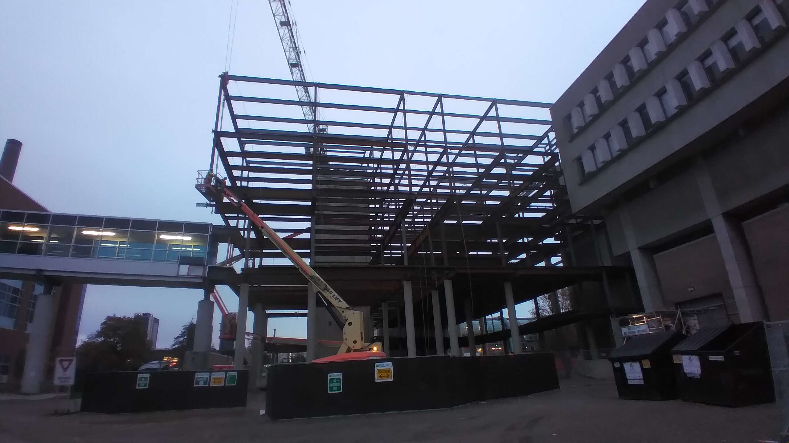
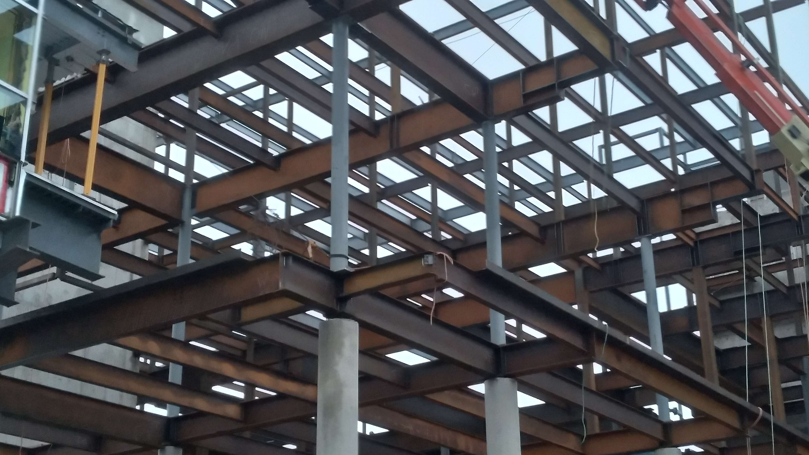
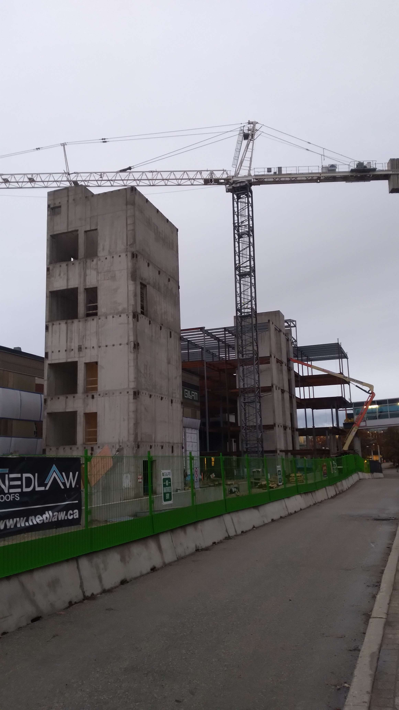
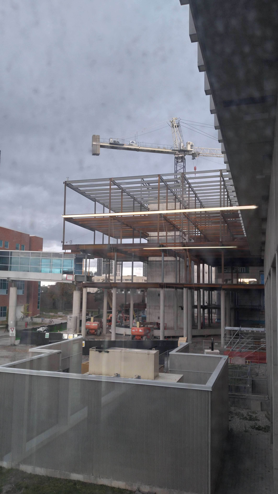
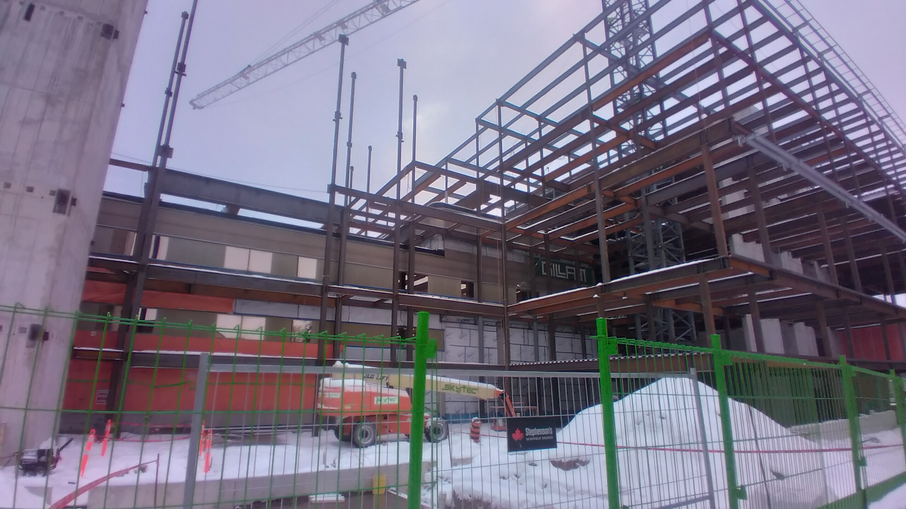
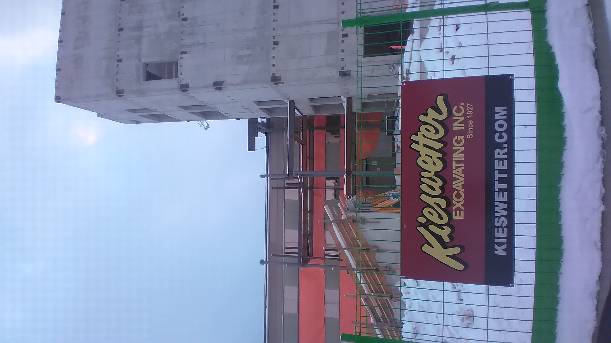

Mathematics 4
Starting in Spring 2025, I have been photographing the construction of the University of Waterloo's Mathematics 4 (M4) building as it has progressed. I also have some other pictures from before then. I have created this award-winning page (and others) to organize these images and show the progression of M4's construction. This page includes all photos in my collection from the second half of 2025.
Special thanks to the owner of pinniped.page, who provided some of the late 2024 and October 2025 photos for use on this page. He also gave me an award for this page.
July 2025


August 2025


September 2025


October 2025
Early October
Photos in this section have been provided by the owner of pinniped.page.


Late October




November 2025
I visited the University of Waterloo twice in November 2025 and took pictures of M4 during both visits.


December 2025
Not much progress was made between my late November and mid-December visits.




Other pages
Last updated: 06/27/2026